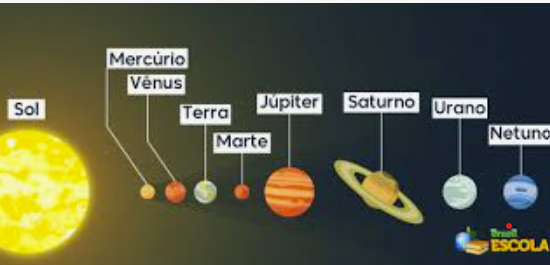
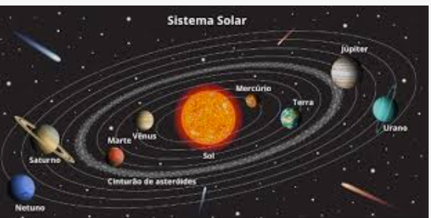
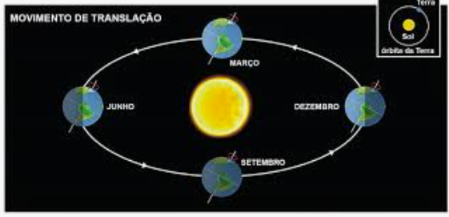
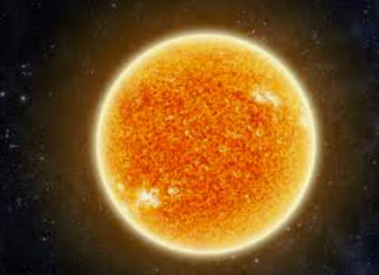
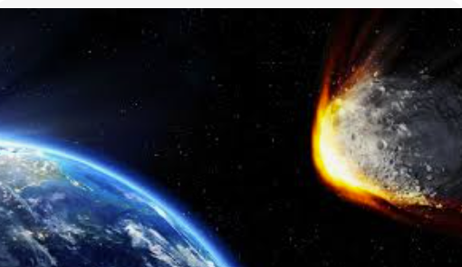
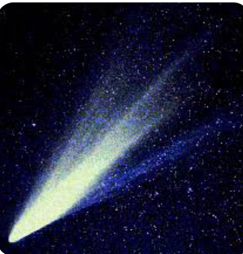
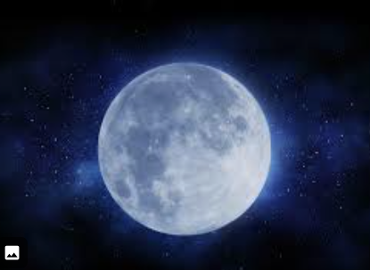

O Universo
O sistema solar
Até o século XVI, acreditava-se que a Terra era o centro do universo. Que tudo, inclusive o Sol, girava em torno do eixo de nosso planeta. Mais tarde, com Nicolau Copérnico, começou-se a considerar a ideia de que o Sol seria o centro do universo. Os anos se passaram e nossos conhecimentos sobre o espaço se desenvolveram. Chegamos à resposta de que existe um grande infinito: galáxias, outros planetas, estrelas maiores que o Sol. Por fim, vimos que o Sol, influenciava diretamente a órbita de oito planetas, dentre eles, a Terra.
O Sistema Solar é formado pelo Sol e pelos planetas: Mercúrio, Vênus, Terra, Marte, Júpiter, Saturno, Urano e Netuno. Os planetas seguem essa ordem partindo, como ponto inicial, o Sol. Não só os planetas que circulam em torno do Sol: existem estrelas, satélites naturais (chamadas de luas) e outros corpos espaciais. Todo o Sistema Solar está dentro de algo maior: a Via Láctea (a galáxia formada por milhares de estrelas e corpos celestes e que abriga o Sistema Solar)

Origem do sistema solar
O sol e o Sistema Solar tiveram origem há 4,5 bilhões de anos a partir de uma nuvem de gás e poeira que girava ao redor de si mesma. Sob a ação de seu próprio peso, essa nuvem se achatou, transformando-se num disco, em cujo centro formou-se o sol. Dentro desse disco, iniciou-se um processo de aglomeração de materiais sólidos, que, ao sofrer colisões entre si, deram lugar a corpos cada vez maiores, os outros planetas.
A composição de tais aglomerados relacionava-se com a distância que havia entre eles e o sol. Longe do astro, onde a temperatura era muito baixa, os planetas possuem muito mais matéria gasosa do que sólida, é o caso de Júpiter, Saturno, Urano e Netuno. Os planetas perto dele, ao contrário, o gelo evaporou, restando apenas rochas e metais, é o caso de Mercúrio, Vênus, Terra e Marte.
Planetas do Sistema Solar
Os planetas não produzem luz, apenas refletem a luz do Sol, que é a estrela do Sistema Solar.
Teorias afirmam que os planetas também foram formados a partir de porções de massa muito quente e que todos estão de resfriando. Alguns, entre eles a Terra, já se resfriaram o suficiente para apresentar a superfície sólida.
Um corpo celeste é considerado um planeta quando, além de não ter luz própria, gira ao redor de uma estrela.
Oito planetas compõem o sistema Solar: Mercúrio, Vênus, Terra, Marte, Júpiter, Saturno, Urano e Netuno.
Obs.: A descrição acima está na ordem de afastamento do Sol. Os planetas têm forma aproximadamente esférica. Os seus movimentos principais são o de rotação e o de translação. Cada planeta possui um eixo de rotação em relação a Sol, o mais inclinado deles é o planeta-anão Plutão, pois seu eixo de rotação em relação ao Sol é de 120º, olhe a figura.

Planetas se movimentam
Movimento de Rotação
No movimento de rotação, os planetas giram em torno do seu próprio eixo, uma linha imaginária que passa pelo seu centro. O observador terrestre tem dificuldade de perceber o movimento de rotação da Terra. Para isso deve-se notar que o Sol, do amanhecer ao anoitecer, parece se mover da região leste em sentido oeste. O mesmo acontece, à noite, com a Lua, as estrelas e demais astros que vemos no céu.
O movimento de rotação da Terra dura, aproximadamente 24horas - o que corresponde a um dia. A Terra, por ser esférica, não é iluminada toda de uma vez só. Conforme a Terra gira em torno do seu eixo, os raios de luz solar incidem sobre uma parte do planeta e a outra fica à sombra.
O ciclo do dia e da noite ocorrem graças a rotação. Enquanto o planeta está girando sobre seu próprio eixo é dia nas regiões que estão iluminadas pelo Sol (período claro) e, simultaneamente, é noite nas regiões não iluminadas (período escuro).
Movimento de Translação
O movimento de translação é executado pelos planetas ao redor do Sol, e o tempo que levam para dar uma volta completa é denominado período orbital. No caso da Terra esse período leva cerca de 365 dias e aproximadamente 6 horas para se completar. A Terra, no seu movimento de translação, forma uma elipse pouco alongada (bem próxima a circular). Já o planeta Netuno traça a sua órbita elíptica de forma bastante alongada.
Em razão do movimento de translação e da posição de inclinação do eixo da Terra, cada hemisfério fica, alternadamente, mais exposto aos raios solares durante um período do ano. Isso resulta nas quatro estações do ano: verão, outono, inverno e primavera. Nos meses de dezembro a março, o Hemisfério Sul - localizado ao sul da linha do Equador - fica mais exposto ao Sol. É quando os raios solares incidem perpendicularmente sobre pelo menos alguns pontos do Hemisfério Sul. É verão nesse hemisfério. Depois de seis meses, nos meses de junho a setembro, a Terra já percorreu metade da sua órbita. O Hemisfério Norte - localizado ao norte da linha do Equador - fica mais exposto ao Sol e, assim, os raios solares incidem perpendicularmente sobre pelo menos alguns pontos do Hemisfério Norte. É verão no Hemisfério Norte

Enquanto é verão no Hemisfério Norte com os dias mais longos e as noites mais curtos, é inverno no Hemisfério Sul, onde os dias tornam-se mais curtos e as noites mais longas. E vice-versa
Em dois períodos do ano (de março a junho e de setembro a dezembro) ha posições da Terra, na sua órbita, em que os dois hemisférios são iluminados igualmente. É quando ocorrem, de forma alternada nos dois hemisférios, as estações climáticas primavera e outono
As estações do ano são invertidas entre os hemisférios Sul e Norte. Por isso é possível, numa mesma época do ano, por exemplo, pessoas aproveitarem o verão numa praia no Hemisfério Sul, enquanto outras se agasalharem por causa de uma nevasca de inverno no Hemisfério Norte.
Nas regiões perto da linha do Equador, tanto em um hemisfério quanto no outro, ocorre constantemente a incidência dos raios do Sol, faz calor durante todo o ano. Há apenas a estação das chuvas e a estação da seca.
Em virtude da "curvatura da Terra" e da inclinação do eixo de rotação da Terra em relação ao seu plano de órbita, os polos recebem raios de Sol bastante inclinados. Por um longo período do ano, os raios solares não chegam aos polos, por isso essas são regiões muito frias.
Astros, planetas e satélites
Astros - Sol
O Sol, nossa fonte de luz e de vida, é a estrela mais próxima de nós e a que melhor conhecemos. Basicamente, é uma enorme esfera de gás incandescente, em cujo núcleo acontece a geração de energia através de reações termonucleares. O estudo do Sol serve de base para o conhecimento das outras estrelas, que de tão distantes aparecem para nós como meros pontos de luz.
Apesar de parecer tão grande e brilhante (seu brilho aparente é 200 bilhões de vezes maior do que o de Sírius, a estrela mais brilhante do céu noturno), na verdade o Sol é uma estrela bastante comum.
Algumas das características listadas acima são obtidas mais ou menos diretamente. Por exemplo, a distância do Sol, chamada Unidade Astronômica, é medida por ondas de radar direcionadas a um planeta em uma posição favorável de sua órbita (por exemplo Vênus, quando Terra e Vênus estão do mesmo lado do Sol e alinhados com ele). O tamanho do Sol é obtido a partir de seu tamanho angular e da sua distância. A massa do Sol pode ser medida a partir do movimento orbital da Terra (ou de qualquer outro planeta) usando a terceira lei de Kepler. Sabendo então sua massa e seu raio temos a densidade média do Sol.
Outras características são determinadas a partir de modelos. Por exemplo, a equação de equilíbrio hidrostático, permite determinar a pressão e a temperatura no centro do Sol, supondo que elas têm que ser extremamente altas para suportar o peso das camadas mais externas.
A primeira determinação quantitativa da composição química da atmosfera solar foi obtida em 1929 por Henry Norris Russel (1877-1957), publicada no Astrophysical Journal, 70, 11, baseada em estimativas a olho das intensidades das linhas no espectro solar

Asteroides
Asteroides são objetos rochosos e metálicos que orbitam o Sol, mas muito pequenos para serem considerados planetas. Eles são conhecidos como planetas secundários. Asteroides variam em tamanho: de Ceres, que tem um diâmetro de cerca de 1000 km, até o tamanho de pedregulhos. Dezesseis asteroides têm um diâmetro de 240 km ou maior. Eles foram achados desde dentro da órbita da Terra até além da órbita de Saturno. Porém, a maioria está contida dentro de um cinto principal que existe entre as órbitas de Marte e Júpiter. Alguns têm órbitas que atravessam o caminho de Terra, e alguns chegaram até mesmo a atingir a Terra em tempos passados. Um dos exemplos dos mais bem preservados é a Cratera de Meteoro Barringer, perto de Winslow, Arizona.
Asteroides são materiais remanescentes da formação do sistema solar. Uma teoria sugere que eles sejam os restos de um planeta que foi destruído há muito tempo em uma brutal colisão. Mais provável, asteroides são materiais que nunca fundiram-se em um planeta. De fato, se a massa total calculada de todos os asteroides fosse juntada em um único objeto, o objeto teria menos de 1.500 quilômetros (932 milhas) de diâmetro -- menos que a metade do diâmetro de nossa Lua.
Muito de nossa compreensão sobre asteroides vem de pedaços examinados de detritos espaciais que caem na superfície da Terra. Asteroides que estão em um curso de colisão com a Terra são chamados meteoroides. Quando um meteoroide golpeia nossa atmosfera a alta velocidade, a fricção faz com que este grosso pedaço de matéria espacial queime em um risco de luz conhecido como meteoro. Se o meteoroide não queima completamente, o que sobra atinge a superfície de Terra e é chamado de meteorito.

Cometas
Cometa é o menor corpo contido no sistema solar, possui semelhança com um asteroide e é constituído, majoritariamente, por gelo. No passado, os cometas produziam nas pessoas medos e superstições e na contemporaneidade causa uma enorme curiosidade.
Eles podem ser periódicos (como é o caso do cometa Halley, que passa pelo sistema solar em intervalos de cerca de 76 anos) e não periódicos, que são aqueles que entram e saem rapidamente no sistema solar em direção ao espaço interestelar. Um cometa possui uma estrutura física dividida em três partes: núcleo, cabeleira ou coma e cauda.

Satélites
Lua
A Lua é o único satélite natural da Terra nota 1 e o quinto maior do Sistema Solar. É o maior satélite natural de um planeta no sistema solar em relação ao tamanho do seu corpo primário, nota 2 tendo 27% do diâmetro e 60% da densidade da Terra, o que representa 1⁄81 da sua massa.
Entre os satélites cuja densidade é conhecida, a Lua é o segundo mais denso. Estima-se que a formação da Lua tenha ocorrido há cerca de 4,5 mil milhões de anos, relativamente pouco tempo após a formação da Terra. Embora no passado tenham sido propostas várias hipóteses para a sua origem, a explicação mais consensual atualmente é a de que a Lua tenha sido formada a partir dos detritos de um impacto de proporções gigantescas entre a Terra e um outro corpo do tamanho de Marte.
A Lua encontra-se em rotação sincronizada com a Terra, mostrando sempre a mesma face visível, marcada por mares vulcânicos escuros entre montanhas cristalinas e proeminentes crateras de impacto. É o mais brilhante objeto no céu a seguir ao Sol, embora a sua superfície seja na realidade escura, com uma refletância pouco acima da do asfalto. A sua proeminência no céu e o seu ciclo regular de fases tornaram a Lua, desde a antiguidade, uma importante referência cultural na língua, em calendários, na arte e na mitologia. A influência da gravidade da Lua está na origem das marés oceânicas e ao aumento do dia sideral da Terra. A sua atual distância orbital, cerca de trinta vezes o diâmetro da Terra, faz com que no céu o satélite pareça ter o mesmo tamanho do Sol, permitindo-lhe cobri-lo por completo durante um eclipse solar total.
